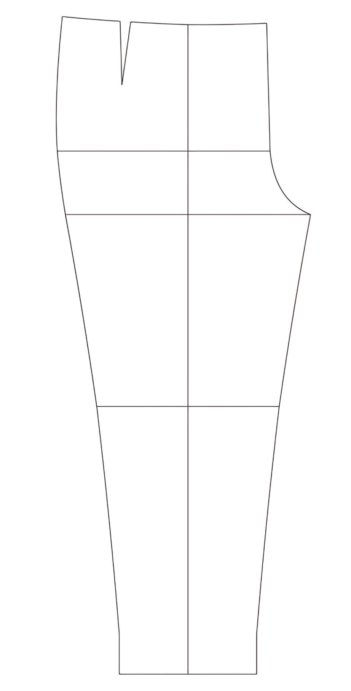
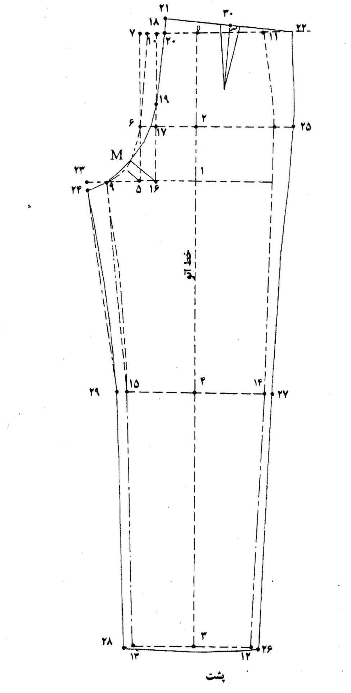

الگو شلوار
آموزش الگوی شلوار، رسم الگوی شلوار گامبهگام
الگوی شلوار یکی از مهمترین بخشهای آموزش خیاطی است که نقش زیادی در خوش فرمی و راحتی لباس دارد. یادگیری رسم الگوی شلوار پایه به شما کمک میکند تا شلواری دقیق، زیبا و متناسب با فرم بدن طراحی و بدوزید.
تعریف الگوی شلوار
الگوی شلوار، نقشهای دقیق از فرم پایینتنه است که بر اساس اندازههای واقعی بدن طراحی میشود. این الگو معمولاً شامل دو بخش اصلی است.الگوی شلوار جلو الگوی شلوار پشت، هر دو قسمت باید بهگونهای طراحی شوند که هنگام دوخت، خط فاق، خط باسن و خط پهلو دقیقاً با فرم بدن هماهنگ باشند.

مراحل رسم الگوی شلوار
- اندازهگیری دقیق بدن شامل دور کمر، دور باسن، دور ران، قد شلوار و قد زانو.
- رسم مستطیل اصلی با توجه به قد شلوار و یکچهارم دور باسن.
- تعیین خطوط افقی شامل خط باسن، خط فاق، خط زانو و خط دمپا.
- رسم فاق جلو و پشت متناسب با اندازههای بدن برای راحتی در نشستن و حرکت.
- طراحی خطوط پهلو و داخل پا برای شکلدهی طبیعی و زیبا به شلوار.
نکته مهم در آموزش الگوی شلوار
دقت در اندازهگیری فاق و پهلو بسیار مهم است، چون کوچکترین خطا در این قسمت باعث کشیدگی، چینافتادگی یا ناراحتی هنگام پوشیدن میشود. پیشنهاد میشود قبل از دوخت اصلی، الگوی شلوار را روی پارچهی متقال تست کنید تا اندازهها و فرم روی بدن بهدرستی بررسی شود
